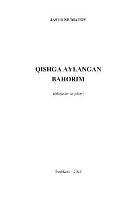

QAHayotiy sinovlar, sadoqat va insoniy munosabatlar haqidagi ta'sirli hikoyalar to'plami.
Mazkur kitob inson qismati, ayollikning turfa qirralari, mehr-oqibat, sadoqat va hayotiy sinovlar haqidagi ta'sirli hikoyalarni o'z ichiga oladi. Asardagi voqealar o'quvchini hayotning og'ir sinovlaridan keyin ham yaxshilik va bahor kelishiga ishontiradi, oila hamda insoniy munosabatlar muhimligini eslatadi.